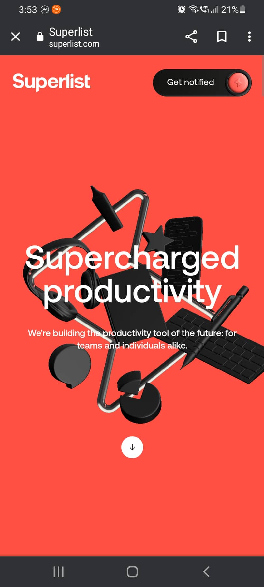
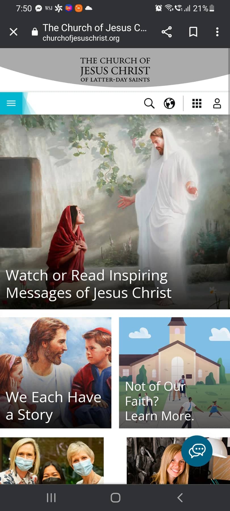

Contrast
ETQ Amsterdam
etq-amsterdam.com
This website followed the principle of contrast. Against the dark background are light-colored images and font, which can easily be recognozed byt the viewer.
Hick's Law
Superlist Website
superlist.com Hick's law makes the choice easier for users. This page presents few buttons and links, so it is easier for the users to browse it.
Fitts Law
Church of Jesus Christ Website
churchofjesuschrist.org Fitts Law deals with the time spent in moving from one distance to another. This website takes only a shorter time to move from one point to another. The buttons are all on the top and the page contains few pictures and links. It only took two fast scrolls in the mobile phone to get to the end of the page.